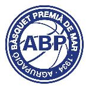

vsCB Salt U18
Data03/10/2026
Hora16:00
LocalAB Premià Blau
RivalCB Salt U18
Anàlisi del rival · Temporada 26-27
Fitxa de preparació de l’AB Premià Blau.

vsS’hi incorporarà la classificació disponible abans del partit.
Encara no s’han afegit resultats ni classificació del CB Salt U18.
Espai reservat per als resultats, anotació, rebots i ritme del rival.
Afegirem aquí la lectura quantitativa quan estigui disponible.
Conclusions útils per preparar el partit.
Completa fortaleses, patrons ofensius, defensa, jugadors clau i ajustos quan es disposi de material.
Espai de treball per staff.
Afegeix el vídeo del partit i les conclusions de scouting. Es comparteixen amb tot l’staff.